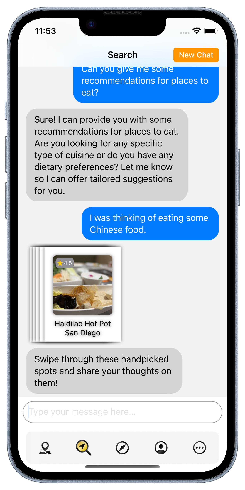
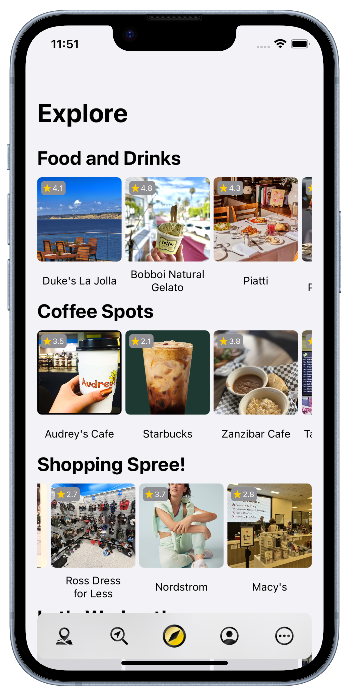
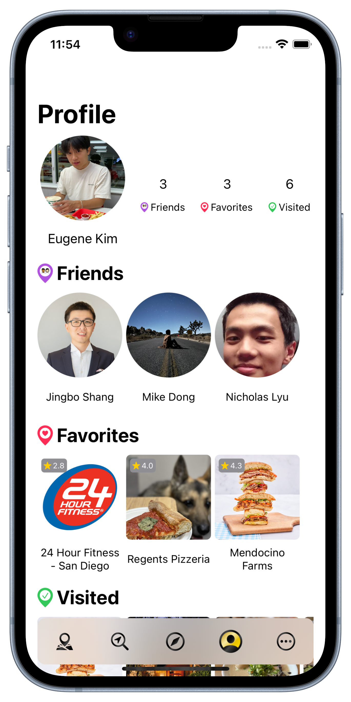
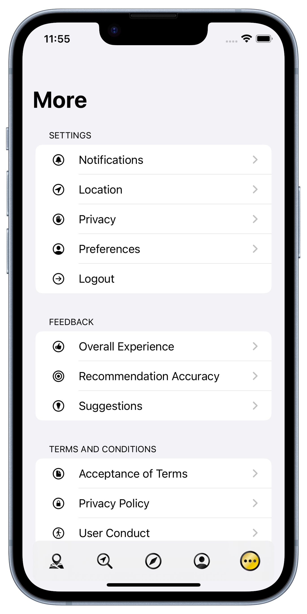

Dynamically displays points of interest (POIs) near the user's current location, enhancing exploration and interaction within a geographical context.
Technical Details
Utilizes SwiftUI for constructing the user interface, offering a modern, responsive design that adapts to various device screens.
Employs MapKit for integrating comprehensive mapping capabilities, including rendering maps, displaying POIs, and handling user interactions with the map.
Fetches real-time location data from an API endpoint, keeping the app updated with the latest business information.
Features
A refresh button seamlessly updates the map with new POIs as users explore different areas, ensuring responsive information.
Different activities and categories are represented with distinct pin icons, making it easy for users to quickly identify the type of POIs they're interested in.
By tapping on POI markers, users access additional information about the location including descriptions, photos, and directions.
M
A
P

Overview
Integrates large language models (LLMs) with real-time location data to offer a personalized location recommendation chatbot for the users.
Technical Details
Leverages OpenAI's Assistant API as the chatbot, enabling complex natural language understanding for processing user queries and delivering context-aware responses.
Capable of function calls and inferring parameters from limited conversation history and user information.
Sorts the list of recommendations based on factors like conversation history, user tags, proximity, and operational hours.
Leverages Redis for in-memory storage, enabling quickly storage and retrieve of chat history.
Features
Users interact with an advanced chatbot that accommodates typos, offering a level of flexibility not found in standard search boxes.
Recommendations are displayed as swipeable location cards that offer a quick glance at what's nearby, enhancing the discovery process.
After each recommendation, users can provide feedback to the chatbot or ask for more information about the recommendations.
S
E
A
R
C
H

Overview
Explore new destinations tailored to your interests, ranging from trending spots and local favorites to places recently visited by friends.
Technical Details
Leverages secure HTTPS requests and API tokens to retrieve up-to-date location data, ensuring security during data transmission.
Employs different sorting algorithms to suggest unique locations that still align with user preferences.
Features
Uses expandable location cards, offering additional information about the location including descriptions, photos, and directions.
Supports automated scrolling and swipeable rows, making it easy for users to navigate through suggestions.
Allows users to refresh content with a simple gesture, introducing new recommendations without additional effort.
E
X
P
L
O
R
E

Overview
Introducing a social media tab that displays your connections, allows you to save your favorite spots, and keeps a record of your visit history.
Technical Details
Automatically retrieves the latest user data from MongoDB, ensuring all information presented is current and accurate.
Utilizes AWS S3 buckets for efficient and secure storage of user profile images.
Features
Features expandable profile cards that reveal more about friends, allowing you to find recommendations their latest activities.
Enables profile customization through the upload of personal photos.
Provides ability for users to manage their favorite locations and their visit history.
P
R
O
F
I
L
E

Overview
Features a section for users to manage their personal settings, provide feedback, and understand the terms and conditions of the service.
Technical Details
Integrates Google Firebase for secure account management, allowing for reliable authentication, account recovery, and real-time data synchronization across devices.
Utilizes Core Location for location services, allowing users to customize their location settings.
Features
Allows users to adjust settings related to notifications, location tracking, and privacy according to their preferences.
Features a section where users can provide feedback on their experience and suggest areas for improvement.
Includes a terms and condition section that outlines the legal considerations such as acceptance of terms, privacy policy, and user conduct.